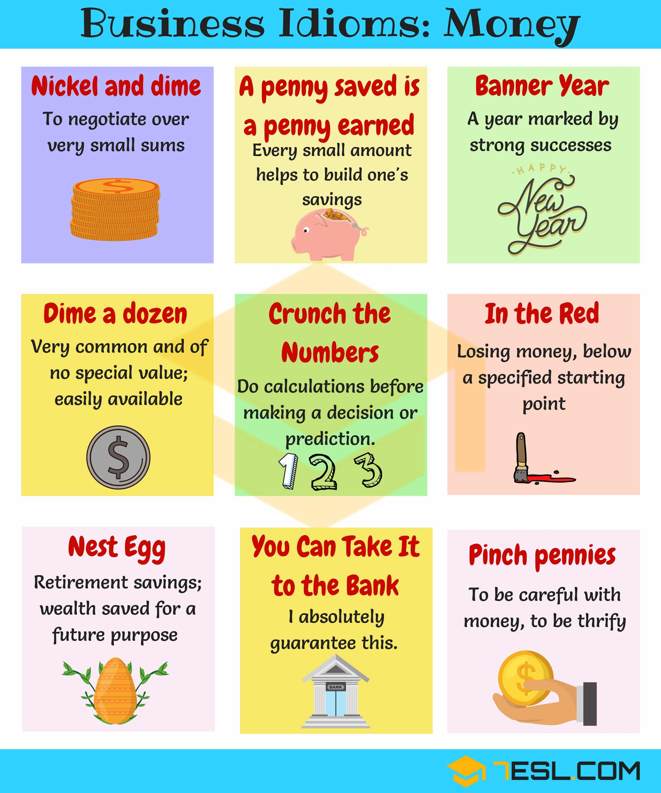

Welcome to Financial strategy
50 Personal Finance Tips That Will Change the Way You… | The Muse
2020.12.05 11:43
15% off Career Coaching | Use code CYBER15 through Dec 13th | BOOK NOW Skip to main content Jobs Companies Advice Coaching Employers Hi Guest Sign In Job Search Finding a Job Resumes Resume Examples Cover Letters Networking Interviewing Job Offer View all in Job Search Career Paths Exploring Careers Careers in Software Engineering Careers in Marketing Careers in Sales Careers in Finance Career Change Training and Development View all in Career Paths Succeeding at Work Work and COVID-19 Productivity Getting Ahead Work Relationships Work-Life Balance Working Parents Remote Work Money Changing Jobs Management Break Room View all in Succeeding at Work Diversity and Inclusion Anti-Racism at Work LGBTQ at Work Disability and Work Gender and Work View all in Diversity and Inclusion More Videos Job Search Videos Career Advice Videos Career Story Videos Company Spotlight Videos Industry Spotlight Videos Employer Resources Money
50 Personal Finance Tips That Will Change the Way You Think About Money
by Alden WickerThis article is from our friends at LearnVest , a leading site for personal finance.
We’ve certainly amassed a wealth of knowledge over the years covering the money beat —be it the dozens of “I got out of debt” success stories we’ve featured to the scores of psychological studies we’ve covered linking better financial decision-making to behavior change.
So given that it’s Financial Literacy Month, we’ve decided that there is no better time than now to round up our 50 top money tips into one juicy, super-helpful read. From the best ways to budget to how to boost your earning potential like a pro, these nuggets of financial wisdom are as fresh as the day they were published.
First Things First: A Few Financial Basics
1. Create a Financial Calendar
If you don’t trust yourself to remember to pay your quarterly taxes or periodically pull a credit report, think about setting appointment reminders for these important money to-dos in the same way that you would an annual doctor’s visit or car tune-up. A good place to start? Our ultimate financial calendar .
2. Check Your Interest Rate
Q: Which loan should you pay off first ? A: The one with the highest interest rate. Q: Which savings account should you open? A: The one with the best interest rate. Q: Why does credit card debt give us such a headache? A: Blame it on the compound interest rate. Bottom line here: Paying attention to interest rates will help inform which debt or savings commitments you should focus on.
3. Track Your Net Worth
Your net worth—the difference between your assets and debt—is the big-picture number that can tell you where you stand financially . Keep an eye on it, and it can help keep you apprised of the progress you’re making toward your financial goals—or warn you if you’re backsliding.
How to Budget Like a Pro
4. Set a Budget, Period
This is the starting point for every other goal in your life. Here’s a checklist for building a knockout personal budget .
5. Consider an All-Cash Diet
If you’re consistently overspending, this will break you out of that rut. Don’t believe us? The cash diet changed the lives of these three people . And when this woman went all cash, she realized that it wasn’t as scary as she thought. Really.
6. Take a Daily Money Minute
This one comes straight from LearnVest Founder and CEO Alexa von Tobel, who swears by setting aside one minute each day to check on her financial transactions. This 60-second act helps identify problems immediately, keep track of goal progress—and set your spending tone for the rest of the day!
7. Allocate at Least 20% of Your Income Toward Financial Priorities
By priorities, we mean building up emergency savings, paying off debt, and padding your retirement nest egg. Seem like a big percentage? Here’s why we love this number .
8. Budget About 30% of Your Income for Lifestyle Spending
This includes movies, restaurants, and happy hours—basically, anything that doesn’t cover basic necessities. By abiding by the 30% rule, you can save and splurge at the same time.
How to Get Money Motivated
9. Draft a Financial Vision Board
You need motivation to start adopting better money habits, and if you craft a vision board, it can help remind you to stay on track with your financial goals.
10. Set Specific Financial Goals
Use numbers and dates, not just words, to describe what you want to accomplish with your money. How much debt do you want to pay off—and when? How much do you want saved, and by what date?
11. Adopt a Spending Mantra
Pick out a positive phrase that acts like a mini rule of thumb for how you spend. For example, ask yourself, “Is this [fill in purchase here] better than Bali next year?” or “I only charge items that are $30 or more.”
12. Love Yourself
Sure, it may sound corny, but it works. Just ask this author , who paid off $20,000 of debt after realizing that taking control of her finances was a way to value herself.
13. Make Bite-Size Money Goals
One study showed that the farther away a goal seems, and the less sure we are about when it will happen, the more likely we are to give up. So in addition to focusing on big goals (say, buying a home), aim to also set smaller, short-term goals along the way that will reap quicker results—like saving some money each week in order to take a trip in six months.
14. Banish Toxic Money Thoughts
Hello, self-fulfilling prophecy! If you psych yourself out before you even get started (“I’ll never pay off debt!”), then you’re setting yourself up to fail. So don’t be a fatalist, and switch to more positive mantras.
15. Get Your Finances–and Body—in Shape
One study showed that more exercise leads to higher pay because you tend to be more productive after you’ve worked up a sweat. So taking up running may help amp up your financial game. Plus, all the habits and discipline associated with, say, running marathons are also associated with managing your money well.
16. Learn How to Savor
Savoring means appreciating what you have now, instead of trying to get happy by acquiring more things.
17. Get a Money Buddy
According to one study , friends with similar traits can pick up good habits from each other—and it applies to your money too! So try gathering several friends for regular money lunches, like this woman did, paying off $35,000 of debt in the process.
How to Amp Up Your Earning Potential
18. When Negotiating a Salary, Get the Company to Name Figures First
If you give away your current pay from the get-go, you have no way to know if you’re lowballing or highballing. Getting a potential employer to name the figure first means you can then push them higher.
19. You Can Negotiate More Than Just Your Salary
Your work hours, official title, maternity and paternity leave, vacation time, and which projects you’ll work on could all be things that a future employer may be willing to negotiate.
20. Don’t Assume You Don’t Qualify for Unemployment
At the height of the recent recession, only half of people eligible for unemployment applied for it. Learn the rules of unemployment .
21. Make Salary Discussions at Your Current Job About Your Company’s Needs
Your employer doesn’t care whether you want more money for a bigger house—it cares about keeping a good employee. So when negotiating pay or asking for a raise, emphasize the incredible value you bring to the company.
How to Keep Debt at Bay
22. Start With Small Debts to Help You Conquer the Big Ones
If you have a mountain of debt, studies show paying off the little debts can give you the confidence to tackle the larger ones. You know, like paying off a modest balance on a department store card before getting to the card with the bigger balance. Of course, we generally recommend chipping away at the card with the highest interest rate, but sometimes psyching yourself up is worth it.
23. Don’t Ever Cosign a Loan
If the borrower—your friend, family member, significant other, whoever—misses payments, your credit score will take a plunge, the lender can come after you for the money, and it will likely destroy your relationship. Plus, if the bank is requiring a cosigner, the bank doesn’t trust the person to make the payments. Bonus tip for parents: If you’re asked to cosign a private loan for your college student , first check to see if your kid has maxed out federal loan, grant, and scholarship options.
24. Every Student Should Fill Out the FAFSA
Even if you don’t think that you’ll get aid, it doesn’t hurt to fill out the form. That’s because 1.3 million students last year missed out on a Pell Grant—which doesn’t need to be paid back!—because they didn’t fill out the form.
25. Always Choose Federal Student Loans Over Private Loans
Federal loans have flexible terms of payment if your employment dreams don’t exactly go according to plan after college. Plus, federal loans typically have better interest rates. So be smart about the loans you take out —and try to avoid these other big student loan mistakes .
26. If You’re Struggling With Federal Student Loan Payments, Investigate Repayment Options
Just call up your lender and ask whether they offer graduated, extended, or income-based plans. Read more about these options here .
27. Opt for Mortgage Payments Below 28% of Your Monthly Income
That’s a general rule of thumb when you’re trying to figure out how much house you can afford. Learn more about this number here . And then indulge in some voyeurism and see what other couples can afford .
How to Shop Smart
28. Evaluate Purchases by Cost Per Use
It may seem more financially responsible to buy a trendy $5 shirt than a basic $30 shirt—but only if you ignore the quality factor! When deciding if the latest tech toy, kitchen gadget, or apparel item is worth it, factor in how many times you’ll use it or wear it. For that matter, you can even consider cost per hour for experiences!
29. Spend on Experiences, Not Things
Putting your money toward purchases like a concert or a picnic in the park—instead of spending it on pricey material objects—gives you more happiness for your buck. The research says so .
30. Shop Solo
Ever have a friend declare, “That’s so cute on you! You have to get it!” for everything you try on? Save your socializing for a walk in the park, instead of a stroll through the mall, and treat shopping with serious attention.
31. Spend on the Real You—Not the Imaginary You
It’s easy to fall into the trap of buying for the person you want to be : chef, professional stylist, triathlete.
32. Ditch the Overdraft Protection
It sounds nice, but it’s actually a way for banks to tempt you to overspend, and then charge a fee for the privilege. Find out more about overdraft protection and other banking mistakes to avoid .
How to Save Right for Retirement
33. Start Saving ASAP
Not next week. Not when you get a raise. Not next year. Today. Because money you put in your retirement fund now will have more time to grow through the power of compound growth.
34. Do Everything Possible Not to Cash Out Your Retirement Account Early
Dipping into your retirement funds early will hurt you many times over. For starters, you’re negating all the hard work you’ve done so far saving—and you’re preventing that money from being invested. Second, you’ll be penalized for an early withdrawal, and those penalties are usually pretty hefty. Finally, you’ll get hit with a tax bill for the money you withdraw. All these factors make cashing out early a very last resort.
35. Give Money to Get Money
The famous 401(k) match is when your employer contributes money to your retirement account. But you’ll only get that contribution if you contribute first. That’s why it’s called a match, see?
36. When You Get a Raise, Raise Your Retirement Savings, Too
You know how you’ve always told yourself you would save more when you have more? We’re calling you out on that. Every time you get a bump in pay, the first thing you should do is up your automatic transfer to savings, and increase your retirement contributions. It’s just one step in our checklist for starting to save for retirement .
How to Best Build—and Track—Your Credit
37. Review Your Credit Report Regularly—and Keep an Eye on Your Credit Score
This woman learned the hard way that a less-than-stellar credit score has the potential to cost you thousands. She only checked her credit report, which seemed fine—but didn’t get her actual credit score, which told a different story.
38. Keep Your Credit Use Below 30% of Your Total Available Credit
Otherwise known as your credit utilization rate, you calculate it by dividing the total amount on all of your credit cards by your total available credit. And if you’re using more than 30% of your available credit, it can ding your credit score .
39. If You Have Bad Credit, Get a Secured Credit Card
A secured card helps build credit like a regular card—but it won’t let you overspend. And you don’t need good credit to get one! Here’s everything you need to know about secured credit cards.
How to Get Properly Insured
40. Get More Life Insurance on Top of Your Company’s Policy
That’s because the basic policy from your employer is often far too little. Not convinced? Read how extra life insurance saved one family .
41. Get Renters Insurance
It, of course, covers robberies, vandalism, and natural disasters, but it could also cover things like the medical bills of people who get hurt at your place, damages you cause at someone else’s home, rent if you have to stay somewhere else because of damage done to your apartment—and even stuff stolen from a storage unit. Not bad for about $30 a month!
How to Prepare for Rainy (Financial) Days
42. Make Savings Part of Your Monthly Budget
If you wait to put money aside for when you consistently have enough of a cash cushion available at the end of the month, you’ll never have money to put aside ! Instead, bake monthly savings into your budget now. Read more on this and other big savings mistakes —and how to fix them.
43. Keep Your Savings Out of Your Checking Account
Here’s a universal truth: If you see you have money in your checking account, you will spend it. Period. The fast track to building up savings starts with opening a separate savings account , so it’s less possible to accidentally spend your vacation money on another late-night online shopping spree.
44. Open a Savings Account at a Different Bank Than Where You Have Your Checking Account
If you keep both your accounts at the same bank, it’s easy to transfer money from your savings to your checking. Way too easy. So avoid the problem—and these other money pitfalls .
45. Direct Deposit is (Almost) Magic
Why, you ask? Because it makes you feel like the money you shuttle to your savings every month appears out of thin air—even though you know full well it comes from your paycheck. If the money you allot toward savings never lands in your checking account, you probably won’t miss it—and may even be pleasantly surprised by how much your account grows over time. Find out other ways to get your emergency fund started .
46. Consider Switching to a Credit Union
Credit unions aren’t right for everyone, but they could be the place to go for better customer service, kinder loans, and better interest rates on your savings accounts.
47. There Are 5 Types of Financial Emergencies
Hint: A wedding isn’t one of them. Only dip into your emergency savings account if you’ve lost your job, you have a medical emergency, your car breaks down, you have emergency home expenses (like a leaky roof), or you need to travel to a funeral. Otherwise, if you can’t afford it, just say no. We explain more here .
48. You Can Have Too Much Savings
It’s rare, but possible. If you have more than six months’ savings in your emergency account (nine months if you’re self-employed), and you have enough socked away for your short-term financial goals, then start thinking about investing.
How to Approach Investing
49. Pay Attention to Fees
The fees you pay in your funds, also called expense ratios, can eat into your returns. Even something as seemingly low as a 1% fee will cost you in the long run. Our general recommendation is to stick with low-cost index funds.
50. Rebalance Your Portfolio Once a Year
We’re not advocates of playing the market, but you need to take a look at your brokerage account every once in a while to make sure that your investment allocations still match your greater investing goals. Here’s how to rebalance .
More From LearnVest
40 Financial Things You Should Know by 40 How to Budget Your Money With the 50/20/30 Rule Are You Financially Healthy? The 3 Numbers You Should Know
Photo of piggy bank courtesy of Shutterstock .
LearnVest empowers people to live their richest lives, with daily newsletters packed with tips and stories on managing your money and boosting your career, a budgeting center for keeping track of your expenses and income, and affordable, personalized financial plans from a team of certified financial planners. More from Alden Wicker ©2020 Daily Muse Inc.About The Muse
About Us Team Careers FAQs Contact Us Search Jobs Browse Companies Terms of Use Privacy PolicyPopular Jobs
New York Jobs San Francisco Jobs Seattle Jobs Engineering Jobs Marketing Jobs Information Technology JobsGet Involved
For Employers The Muse Book: The New Rules of Work Podcast: The New Rules of Work For Career Coaches For Developers Send Feedback About The Muse Tell A FriendJoin the Conversation
